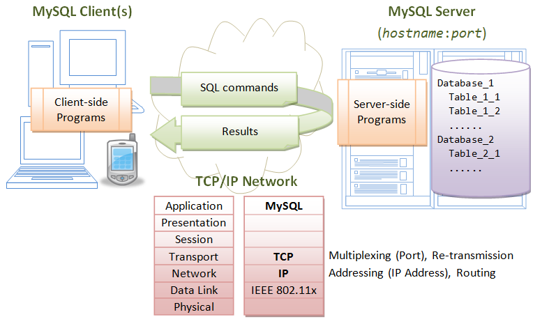
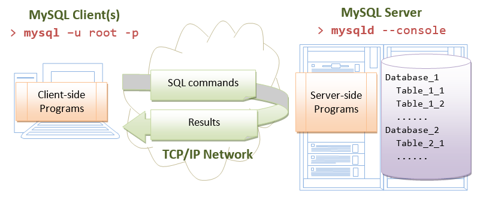
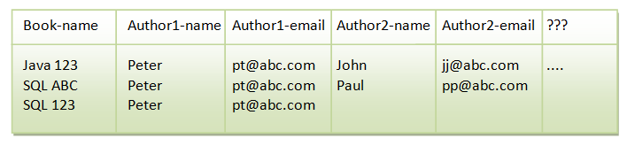

This article is applicable to MySQL 5.7. There are some changes in MySQL 5.7 over 5.6. Read "How to Install MySQL 5.6" for installing MySQL 5.6.
This practical can be completed in a 3-hour session.
Introduction to Relational Database and SQL
Relational Databases
A relational database organizes data in tables. A table has rows (or records) and columns (or fields). Tables are related based on common columns to eliminate data redundancy and ensure data integrity.
Popular Relationship Database Management System (RDBMS) includes the commercial Oracle, IBM DB2, Microsoft SQL Server and Access, SAP SyBase and Teradata; and the free MySQL, PostgreSQL, Embedded Apache Derby (Java DB), mSQL (mini SQL), SQLite and Apache OpenOffice's Base.
Structure Query Language (SQL)
A high-level language, called Structure Query Language (SQL), had been designed for interacting with the relational databases. SQL defines a set of commands, such as SELECT, INSERT, UPDATE, DELETE, CREATE TABLE, DROP TABLE, and etc.
Edgar F. Codd (of IBM) proposed the Relational Database Model in 1970. SQL, one of the earlier programming language, was subsequently developed by Donald D. Chamberlin and Raymond F. Boyce at IBM in the early 1970s. Oracle, subsequently, took it to a new height.
ANSI (American National Standard Institute) established the first SQL standard in 1986 (SQL-86 or SQL-87) - adopted by ISO/IEC as "ISO/IEC 9075" - followed in 1989 (SQL-89), 1992 (SQL-92 or SQL2), 1999 (SQL-99 or SQL3), 2003 (SQL-2003), 2006 (SQL-2006) and 2011 (SQL-2011). However, most of the database vendors have their own directs, e.g., PL/SQL (Oracle), Transact-SQL (Microsoft, SAP), PL/pgSQL (PostgreSQL).
SQL By Examples
A relational database system contains many databases. A database comprises one or more tables. A table have rows (or records) and columns (or fields).
Suppose we have created a table called class101, in a database called studentdb, with 3 columns: id, name and gpa. A column has a data type. We choose: INT (integer) for column id, FLOAT (floating-point number) for gpa, and VARCHAR(50) (variable-length string of up to 50 characters) for name. There are 4 rows in the table as follows:
Database: studentdb Table: class101 +-----------+--------------------+-------------+ | id (INT) | name (VARCHAR(50)) | gpa (FLOAT) | +-----------+--------------------+-------------+ | 1001 | Tan Ah Teck | 4.5 | | 1002 | Mohammed Ali | 4.8 | | 1003 | Kumar | 4.8 | | 1004 | Kevin Jones | 4.6 | +-----------+--------------------+-------------+
SQL provides an easy and intuitive way to interact with relational databases.
SELECT
-- SYNTAX SELECT column1, column2, ... FROM tableName WHERE criteria SELECT * FROM tableName WHERE criteria -- EXAMPLES SELECT name, gpa FROM class101 -- Select columns name and gpa from table class101. +--------------+------+ | name | gpa | +--------------+------+ | Tan Ah Teck | 4.5 | | Mohammed Ali | 4.8 | | Kumar | 4.8 | | Kevin Jones | 4.6 | +--------------+------+ SELECT * FROM class101 -- Select ALL columns from table class101. -- The wildcard * denotes all the columns. +------+--------------+------+ | id | name | gpa | +------+--------------+------+ | 1001 | Tan Ah Teck | 4.5 | | 1002 | Mohammed Ali | 4.8 | | 1003 | Kumar | 4.8 | | 1004 | Kevin Jones | 4.6 | +------+--------------+------+ SELECT name, gpa FROM class101 WHERE gpa >= 4.7 -- Select columns name and gpa, where the rows meet the criteria. -- You can compare numbers using =, >, <, >=, <=, <> (!=) +--------------+------+ | name | gpa | +--------------+------+ | Mohammed Ali | 4.8 | | Kumar | 4.8 | +--------------+------+ SELECT name, gpa FROM class101 WHERE name = 'Tan Ah Teck' -- Full-match (= or !=) on string. Strings are enclosed in single quotes. +-------------+------+ | name | gpa | +-------------+------+ | Tan Ah Teck | 4.5 | +-------------+------+ SELECT name FROM class101 WHERE name LIKE 'k%' -- Use "LIKE" for string pattern-matching, with -- wildcard % matches zero or more (any) characters; -- wildcard _ matches one (any) character. +-------------+ | name | +-------------+ | Kumar | | Kevin Jones | +-------------+ SELECT * FROM class101 WHERE gpa > 4 AND name LIKE 'k%' ORDER BY gpa DESC, name ASC -- Use AND, OR, NOT to combine simple conditions. -- Order the results in DESC (descending) or ASC (Ascending) +------+-------------+------+ | id | name | gpa | +------+-------------+------+ | 1003 | Kumar | 4.8 | | 1004 | Kevin Jones | 4.6 | +------+-------------+------+
DELETE
-- SYNTAX DELETE FROM tableName WHERE criteria -- EXAMPLES DELETE FROM class101 -- Delete ALL rows from the table class101! Beware that there is NO UNDO! DELETE FROM class101 WHERE id = 33 -- Delete rows that meet the criteria.
INSERT
-- SYNTAX INSERT INTO tableName VALUES (firstColumnValue, ..., lastColumnValue) -- All columns INSERT INTO tableName (column1, column2, ...) VALUES (value1, value2, ...) -- Selected Columns -- Example INSERT INTO class101 VALUES (1001, 'Tan Ah Teck', 4.5) -- List value of all columns. INSERT INTO class101 (name, gpa) VALUES ('Peter Jones', 4.55) -- Missing fields will be set to their default values or NULL
UPDATE
-- SYNTAX UPDATE tableName SET column = value WHERE criteria -- EXAMPLES UPDATE class101 SET gpa = 5.0 -- ALL rows UPDATE class101 SET gpa = gpa + 1.0 WHERE name = 'Tan Ah Teck' -- Selected rows
CREATE TABLE
-- SYNTAX CREATE TABLE tableName (column1Name column1Type, column2Name column2Type, ...) -- EXAMPLES CREATE TABLE class101 (id INT, name VARCHAR(50), gpa FLOAT)
DROP TABLE
-- SYNTAX DROP TABLE tableName -- EXAMPLES DROP TABLE class101 -- Delete the table. Beware that there is No UNDO!!!
Notes:
- Case Sensitivity: SQL keywords, names (identifiers), strings may or may not be case-sensitive, depending on the implementation.
- In MySQL, the keywords are NOT case-sensitive. For clarity, I show the keywords in uppercase in this article.
- For programmers, it is BEST to treat the names (identifiers) and strings as case-sensitive.
[In MySQL, column-names are always case insensitive; but table-names are case-sensitive in Unix, but case-insensitive in Windows (confused!!). Case-sensitivity in string comparison depends on the collating sequence used (?!).]
- Quotes for String: SQL strings are enclosed in single quotes, but most implementations (such as MySQL) also accept double quotes.
Introduction to MySQL Relational Database Management System (RDBMS)
SQL is a language for interacting with relational databases. On the other hand, MySQL is a software system - a Relational Database Management System.
MySQL is one of the most used, and possibly the best industrial-strength, open-source and free Relational Database Management System (RDBMS). MySQL was developed by Michael "Monty" Widenius and David Axmark in 1995. It was owned by a Swedish company called MySQL AB, which was bought over by Sun Microsystems in 2008. Sun Microsystems was acquired by Oracle in 2010.
MySQL is successful, not only because it is free and open-source (there are many free and open-source databases, such as Apache Derby (Java DB), mSQL (mini SQL), SQLite, PostgreSQL and Apache OpenOffice's Base), but also for its speed, ease of use, reliability, performance, connectivity (full networking support), portability (run on most OSes, such as Unix, Windows, Mac), security (SSL support), small size, and rich features. MySQL supports all features expected in a high-performance relational database, such as transactions, foreign key, replication, subqueries, stored procedures, views and triggers.
MySQL is often deployed in a LAMP (Linux-Apache-MySQL-PHP), WAMP (Windows-Apache-MySQL-PHP), or MAMP (Mac-Apache-MySQL-PHP) environment. All components in LAMP is free and open-source, inclusive of the Operating System.
The mother site for MySQL is www.mysql.com. The ultimate reference for MySQL is the "MySQL Reference Manual", available at http://dev.mysql.com/doc. The reference manual is huge - the PDF has over 3700 pages!!!
MySQL operates as a client-server system over TCP/IP network. The server runs on a machine with an IP address, on a chosen TCP port number. The default TCP port number for MySQL is 3306. Users can access the server via a client program, connecting to the server at the given IP address and TCP port number.
A MySQL database server contains one or more databases. A database contains one or more tables. A table consists of rows (or records) and columns (or fields).
How to Install MySQL 5.7 and Get Started with SQL Programming
I want you to install MySQL on your own machine, because I want you to learn how to install, customize and operate complex industrial software system. Installation could be the hardest part in this exercise.
Step 1: Download and Install MySQL
For Windows
- Download MySQL ZIP ARCHIVE from http://dev.mysql.com/downloads/mysql/:
- Choose "General Available (GA) Releases" tab.
- In "Select Platform", choose "Microsoft Windows".
- Under "Other Downloads", download "Windows (x86, 64-bit), ZIP ARCHIVE" or "Windows (x86, 32-bit), ZIP ARCHIVE". (You can check whether your Windows is 32-bit or 64-bit from "Control Panel" ⇒ System ⇒ System ⇒ System Type.)
- There is NO need to "Sign-up" - Just click "No thanks, just start my downloads!".
- Create a project directory, say "
d:\myProject" or "c:\myProject".
UNZIP the downloaded file into your project directory. MySQL will be unzipped as "d:\myProject\mysql-5.7.{xx}-winx64".
For ease of use, we shall shorten and rename the directory to "d:\myProject\mysql". Take note and remember your MySQL installed directory!!! - (NEW since MySQL 5.7.7) Initialize the database: Start a CMD (as administrator) and issue these commands:
// Change directory to the MySQL installed directory // Suppose that your MySQL installed directory is d:\myProject\mysql d: cd \myProject\mysql\bin // Initialize the database. Create a root user without password. Show the message on console mysqld --initialize --console ...... ...... [Note] A temporary password is generated for root@localhost: xxxxxxxx
During the installation, a superuser calledrootis created with a temporary random password, as shown above. TAKE NOTE of the root's PASSWORD, COPY and save it somewhere, and Take a Picture!!!! - If you make a mistake somewhere, delete the entire MySQL directory, and repeat step 2 and 3.
For Mac OS X
- Download the MySQL "DMG Archive" from
http://dev.mysql.com/downloads/mysql/:
- Choose "General Available (GA) Releases" tab.
- In "Select Platform", choose the "Mac OS X".
- Select the appropriate "DMG Archive" for your specific Mac OS version:
- Click the Apple logo ⇒ "About this Mac" to check your Mac OS version.
- Read http://support.apple.com/kb/ht3696 to check if your Mac OS is 32-bit or 64-bit.
- There is NO need to "Sign-up" - Just click "No thanks, just start my download".
- To install MySQL:
- Go to "Downloads" ⇒ Double-click "
.dmg" file downloaded. - Double-click the "
mysql-5.7.{xx}-osx10.x-xxx.pkg" - Follow the screen instructions to install MySQL. During the
installation, a superuser called
rootis created with a temporary random password. TAKE NOTE of the root's PASSWORD, COPY and save it somewhere, and Take a picture!!!!
- MySQL will be installed in "
/usr/local/mysql". Take note of this installed directory!! - Eject the ".
dmg" file.
- Go to "Downloads" ⇒ Double-click "
- If you make a mistake somewhere, stop the server (Click Apple Icon ⇒ System Preferences ⇒ MySQL ⇒ Stop), remove the directories "
/usr/local/mysql-5.7.{xx}...", and re-run the installation. Re-start the server (Click Apple Icon ⇒ System Preferences ⇒ MySQL ⇒ Start). You may need to re-start your machine.
For Ubuntu
Refer to "How to install MySQL 5 on Ubuntu".
I shall assume that MySQL is installed in directory d:\myProject\mysql (for Windows) or /usr/local/mysql (for Macs). But you need to TAKE NOTE OF YOUR MySQL INSTALLED DIRECTORY. Hereafter, I shall denote the MySQL installed directory as <MYSQL_HOME> in this article.
Step 3: Start the Server
The MySQL is a client-server system. The database is run as a server application. Users access the database server via a client program, locally or remotely thru the net, as illustrated:
- The server program is called "
mysqld" (with a suffix'd', which stands for daemon - a daemon is a non-interactive process running in the background). - The client program is called "
mysql" (without the'd').
The programs mysqld and mysql are kept in the "bin" sub-directory of the MySQL installed directory.
Startup Server
For Windows
To start the database server, launch a CMD shell:
-- Change the current directory to MySQL's "bin" directory -- Assume that the MySQL installed directory is "d:\myProject\mysql" d: -- Set the current drive cd \myProject\mysql\bin -- Change Directory to the MySQL's bin directory -- Start the MySQL Database Server mysqld --console ...... ...... XXXXXX XX:XX:XX [Note] mysqld: ready for connections. Version: '5.6.xx-community' socket: '' port: 3306 MySQL Community Server (GPL)
Notes: The --console option directs the server output messages to the console. Without this option, you will see a blank screen.
For Mac OS X
The EASY WAY: Via the graphical control. Click Apple Icon ⇒ System Preferences ⇒ MySQL ⇒ Start.
The MySQL database server is now started, and ready to handle clients' requests.
Anything that can possibly go wrong, does! Read "Common Problems in Starting the MySQL Server after Installation".
Shutdown Server
For Windows
The quickest way to shut down the database server is to press Ctrl-C to initiate a normal shutdown. DO NOT KILL the server via the window's CLOSE button.
Observe these messages from the MySQL server console:
XXXXXX XX:XX:XX [Note] mysqld: Normal shutdown ...... XXXXXX XX:XX:XX InnoDB: Starting shutdown... XXXXXX XX:XX:XX InnoDB: Shutdown completed; log sequence number 0 44233 ...... XXXXXX XX:XX:XX [Note] mysqld: Shutdown complete
For Mac OS X
The EASY WAY: Via the graphical control. Click Apple Icon ⇒ System Preferences ⇒ MySQL ⇒ Stop.
WARNING: You should properly shutdown the MySQL server. Otherwise, you might corrupt the database and might have problems restarting it. BUT, if you encounter problem shutting down the server normally, you may kill the "mysqld" process in Task Manager (for Windows); or Activity Monitor (for Mac OS X); or System Monitor (for Ubuntu).
Step 4: Start a Client
Recall that the MySQL is a client-server system. Once the server is started, one or more clients can be connected to the database server. A client could be run on the same machine (local client); or from another machine over the net (remote client).
To login to the MySQL server, you need to provide a username and password. During the installation, MySQL creates a superuser called "root" with a temporary random password. I hope that you have taken note of this password!!
The MySQL installation provides a command-line client program called "mysql". (Recall that the server program is called "mysqld" with a suffix 'd'; the client program does not have the suffix 'd').
Let's start a command-line client with the superuser "root".
First, make sure that the server is running. See previous step to re-start the server if it has been shutdown.
For Windows
Start another NEW CMD shell to run the client:
-- Change the current directory to <MYSQL_HOME>\bin. -- Assume that the MySQL is installed in "d:\myProject\mysql". d: -- Change the current drive cd \myProject\mysql\bin -- Change Directory to YOUR MySQL's "bin" directory -- Start a client as superuser "root" mysql -u root -p Enter password: // Enter the root's password set during installation. // NOTHING will be shown for maximum security. Welcome to the MySQL monitor. Commands end with ; or \g. Your MySQL connection id is 1 Server version: 5.1.39-community MySQL Community Server (GPL) Type 'help;' or '\h' for help. Type '\c' to clear the current input statement. mysql> -- Client started. The prompt changes to "mysql>". -- You can now issue SQL commands.
For Mac OS X
Open a NEW "Terminal" and issue these commands to start a MySQL client with superuser root:
-- Change the current directory to <MYSQL_HOME>\bin. cd /usr/local/mysql/bin -- Start a client with superuser "root" ./mysql -u root -p Enter password: // Enter the root's password set during installation. // NOTHING will be shown for maximum security. Welcome to the MySQL monitor. Commands end with ; or \g. ...... mysql> -- Client started. The prompt changes to "mysql>". -- You can now issue SQL commands.
(Skip Unless...) Read "Common Problems in Starting the MySQL Client".
Step 5: Change the Password for the Superuser "root"
As mentioned earlier, the MySQL installation creates a superuser called "root" with a temporary random password. "root" is a privileged user that can do anything, including deleting all the databases. You are required to change the root's password after logging in.
Change the Password for "root"
Let's continue with our client session started earlier.
-- Change password for 'root'@'localhost'. Replace xxxx with your chosen password -- (For my students: use xxxx as the password. Otherwise, -- you will ask me what is your password next week.) -- Take note that strings are to be enclosed by a pair of single-quotes. mysql> alter user 'root'@'localhost' identified by 'xxxx'; Query OK, 0 rows affected (0.00 sec) -- logout and terminate the client program mysql> quit Bye
Re-Start a Client as "root" with the New Password
We have just changed the password for root and exited the client. Start a client and login as root again. Enter the password when prompted.
For Windows
-- Change the current working directory to <MYSQL_HOME>\bin mysql -u root -p Enter password: // Type your password and enter. NOTHING will be shown for security. Welcome to the MySQL monitor. ...... mysql> -- client started, ready to issue SQL command
For Mac OS X
-- Change the current working directory to /usr/local/mysql/bin cd /usr/local/mysql/bin ./mysql -u root -p Enter password: // Type your password and enter. NOTHING will be shown for security. Welcome to the MySQL monitor. ...... mysql> -- client started, ready to issue SQL command
Step 6: Create a New User
The superuser "root" is privileged, which is meant for database administration and is not meant for operational. We shall create a new user - let's call it "myuser" - with a lesser privilege. To create a new user, start a client with superuser "root":
-- Start a client, IF IT IS NOT STARTED mysql -u root -p // Windows ./mysql -u root -p // Mac OS X -- Create a new user called "myuser", which can login from localhost, with password "xxxx" mysql> create user 'myuser'@'localhost' identified by 'xxxx'; Query OK (0.01 sec) -- Grant permission to myuser mysql> grant all on *.* to 'myuser'@'localhost'; Query OK (0.01 sec) mysql> quit
Explanation
- CREATE USER 'myuser'@'localhost' IDENTIFIED BY 'xxxx'
We use the command "create user" to create a new user called'myuser'@'localhost', who can login to the server locally from the same machine (but not remotely from another machine), with password "xxxx". - GRANT ALL ON *.* TO 'myuser'@'localhost'
The newly created user has NO privilege to perform any database operation includingselect. We use the "grant" command to grant "all" the privileges (includingselect,insert,delete, and so on) to this new user on ALL the databases and ALL the tables ("on *.*"). This new user, in practice, has the same privilege asroot, except that it cannot issuegrantcommand. For production, you should grant only the necessary privileges on selected databases and selected tables, e.g., "grant select,insert,update on studentdb.*" - it can issueselect,insertandupdate(but nodelete,create/drop table) on ALL the tables of the databasestudentdbonly.
Step 7: Create a new Database, a new Table in the Database, Insert Records, Query and Update
A MySQL server contains many databases. A database contains many tables. A table contains rows (records) and columns (fields).
Let's create a database called "studentdb", and a table called "class101" in the database. The table shall have three columns: id (of the type INT - integer), name (of the type VARCHAR(50) - variable-length string of up to 50 characters), gpa (of the type FLOAT - floating-point number).
CAUTION: Programmers don't use blank and special characters in names (database names, table names, column names). It is either not supported, or will pose you many more challenges.
TIPS: Before we proceed, here are some tips on using the client:
- You need to terminate your command with a semicolon (
;), which sends the command to the server for processing. E.g.,mysql> select * from class101 ; -- Send the command to the server for processing
- You can use
\cto cancel (abort) the current command. E.g.,mysql> select * from class101 \c -- abort (cancel) the command
- A command can span several lines. The prompt for subsequent lines changes to
->. You need to terminate the command with a semicolon (;). E.g.,mysql> select * -> from class101 -> -> ; -- A command can span several lines, ended with a semicolon. - If you open a single quote, without closing it, the prompt changes to
'>. For example,mysql> select 'xxx '> '\c // close the single-quote and abort - You can use up/down arrow keys to retrieve the previous/next commands (from the history commands).
- (For Windows) You should enable copy/paste functions of CMD shell. To enable copy/paste, click the CMD's icon ⇒ Properties ⇒ Options ⇒ Edit Options ⇒ Check "QuickEdit Mode". You can then select the desired texts and use a "right-click" to copy the selected text; another "right-click" to paste.
Let's start a client with our newly-created user "myuser".
-- Start a client, IF IT IS NOT STARTED -- cd to the MySQL's bin directory mysql -u myuser -p // Windows ./mysql -u myuser -p // Mac OS X -- Create a new database called "studentdb" mysql> create database if not exists studentdb; Query OK, 1 row affected (0.08 sec) -- list all the databases in this server mysql> show databases; +--------------------+ | Database | +--------------------+ | ...... | | studentdb | | ...... | +--------------------+ x rows in set (0.07 sec) -- Use "studentdb" database as the default database -- You can refer to tables in the default database by the tablename alone, instead of databasename.tablename mysql> use studentdb; Database changed -- Remove the table "class101" in the default database if it exists mysql> drop table if exists class101; Query OK, 0 rows affected (0.15 sec) -- Create a new table called "class101" in the default database -- with 3 columns of the specified types mysql> create table class101 (id int, name varchar(50), gpa float); Query OK, 0 rows affected (0.15 sec) -- List all the tables in the default database "studentdb" mysql> show tables; +---------------------+ | Tables_in_studentdb | +---------------------+ | class101 | +---------------------+ 1 row in set (0.00 sec) -- Describe the "class101" table (list its columns' definition) mysql> describe class101; +-------+-------------+------+-----+---------+-------+ | Field | Type | Null | Key | Default | Extra | +-------+-------------+------+-----+---------+-------+ | id | int(11) | YES | | NULL | | | name | varchar(50) | YES | | NULL | | | gpa | float | YES | | NULL | | +-------+-------------+------+-----+---------+-------+ 3 rows in set (0.04 sec) -- Insert a row into "class101" table. -- Strings are to be single-quoted. No quotes for INT and FLOAT. mysql> insert into class101 values (11, 'Tan Ah Teck', 4.8); Query OK, 1 row affected (0.03 sec) -- Insert another row mysql> insert into class101 values (22, 'Mohamed Ali', 4.9); Query OK, 1 row affected (0.03 sec) -- Select all columns (*) from table "class101" mysql> select * from class101; +----+-------------+------+ | id | name | gpa | +----+-------------+------+ | 11 | Tan Ah Teck | 4.8 | | 22 | Mohamed Ali | 4.9 | +----+-------------+------+ 2 rows in set (0.00 sec) -- Select columns from table "class101" with criteria mysql> select name, gpa from class101 where gpa > 4.85; +-------------+------+ | name | gpa | +-------------+------+ | Mohamed Ali | 4.9 | +-------------+------+ 1 rows in set (0.00 sec) -- Update selected records mysql> update class101 set gpa = 4.4 where name = 'Tan Ah Teck'; Query OK, 1 row affected (0.05 sec)
Rows matched: 1 Changed: 1 Warnings: 0 mysql> select * from class101; +----+-------------+------+ | id | name | gpa | +----+-------------+------+ | 11 | Tan Ah Teck | 4.4 | | 22 | Mohamed Ali | 4.9 | +----+-------------+------+ 2 rows in set (0.00 sec) -- delete selected records mysql> delete from class101 where id = 22; Query OK, 1 row affected (0.03 sec) mysql> select * from class101; +----+-------------+------+ | id | name | gpa | +----+-------------+------+ | 11 | Tan Ah Teck | 4.4 | +----+-------------+------+ 1 rows in set (0.00 sec) -- You can store SQL commands in a FILE (called SQL script) and run the script. -- Use a programming text editor to CREATE a NEW FILE called "mycommands.sql" -- containing the following three SQL statements. -- (For Windows) Save the file under "d:\myProject". -- (For Mac OS X) Save the file under "Documents". insert into class101 values (33, 'Kumar', 4.8); insert into class101 values (44, 'Kevin', 4.6); Select * from class101; -- Once you have created the file, you can use the following "source" command -- to run the SQL script. -- You need to provide the full path to the script. -- (For Windows) The filename is d:\myProject\mycommands.sql. -- (For Mac OS X) The filename is ~/Documents/mycommands.sql mysql> source d:\myProject\mycommands.sql // For Windows mysql> source ~/Documents/mycommands.sql // For Mac OS X Query OK, 1 row affected (0.00 sec) -- INSERT command output Query OK, 1 row affected (0.00 sec) -- INSERT command output +------+-------------+------+ -- SELECT command output | id | name | gpa | +------+-------------+------+ | 11 | Tan Ah Teck | 4.4 | | 33 | Kumar | 4.8 | | 44 | Kevin | 4.6 | +------+-------------+------+ 3 rows in set (0.00 sec)
Exercises:
- Select records with names starting with letter
'K'. (Hints:name like 'K%') - Select records with names NOT starting with letter
'K'. (Hints:name NOT like ...) - Select records with
gpabetween 4.35 and 4.65. (Hints:test-1 AND test-2) - Select records with names having a letter
'e'. (Hints:name like '%e%') - Select records with names having a letter
'e'or'a'. (Hints:test-1 OR test-2) - Select records with names NOT having a letter
'e'or'a'. (Hints:NOT (test-1 OR test-2)) - Select records with names having a letter
'e'andgpa ≥ 4.5.
(Skip Unless... ) Read "Common Problems in Using the mysql Client".
More Exercises
- Show all the databases.
- Create a new database called "
ABCTrading". - Set the "
ABCTrading" database as the default database. - Show all the tables in the default database.
- Create a new table called "
products" with the columns and type indicated below.+-------+----------+-------------+----------+---------+ | id | category | name | quantity | price | | (INT) | CHAR(3) | VARCHAR(20) | (INT) | (FLOAT) | +-------+----------+-------------+----------+---------+ | 1001 | PEN | Pen Red | 5000 | 1.23 | | 1002 | PEN | Pen Blue | 8000 | 1.25 | | 1003 | PEN | Pen Black | 2000 | 1.25 | | 1004 | PCL | Pencil 2B | 10000 | 0.49 | | 1005 | PCL | Pencil 2H | 9000 | 0.48 | +-------+----------+-------------+----------+---------+
- Show the table description.
- Insert the above records and list all the records.
- List records with name containing "
Pencil". - List records with price ≥ 1.0.
- Increase the price of all items by 10%, and list all the records.
- Remove "Pen Red" from the table, and list all the records.
Many-to-many Relationship
In a bookstore, a book is written by one or more authors; an author may write zero or more books. This is known as a many-to-many relationship. It is IMPOSSIBLE to capture many-to-many relationship in a SINGLE table with a fixed number of columns, without duplicating any piece of information! For example, if you organize the data in the table below, you will not know how many author columns to be used; and you need to repeat all the data for repeating authors.
 The many-to-many relationship between books and authors can be modeled with 3 tables, as shown below. A books table contains data about books (such as title and price); an authors table contains data about the authors (such as name and email). A table called books_authors joins the books and authors tables and captures the many-to-many relationship between books and authors.
Exercises
- Create a database called "
mybookstore". - Use "
mybookstore" as the default database. - Create 3 tables "
books", "authors", and "books_authors" in the database "mybookstore", with column names and types as shown. - Insert the respective records into the tables. List the contents of each of the tables.
- Try this query and explain the output:
SELECT books.title, books.price, authors.name FROM books, books_authors, authors WHERE books.isbn = books_authors.isbn AND authors.authorID = books_authors.authorID AND authors.name = 'Tan Ah Teck';
- List all the books (
title,price,qty) by "Tan Ah Teck" withpriceless than20. - List all the authors (
nameandemail) for the book title "Java for Dummies". - List all the books (
title,price,qty) and all the authors (nameandemail) for books with title beginning with "Java" (Hints:title LIKE 'Java%').
Backup and Restore Databases
Backup via "mysqldump" Utility Program
You can use the "mysqldump" utility program to back up the entire server (all databases), selected databases, or selected tables of a database. The "mysqldump" program generates a SQL script that can later be executed to re-create the databases, tables and their rows.
For example, the following command backups the entire "studentdb" database to a SQL script called "backup_studentdb.sql".
For Windows
-- Start a NEW "cmd"
d:
cd \myProject\mysql\bin
mysqldump -u myuser -p --databases studentdb > "d:\myProject\backup_studentdb.sql"
For Mac OS X
-- Start a NEW "terminal" cd /usr/local/mysql/bin ./mysqldump -u myuser -p --databases studentdb > ~/Documents/backup_studentdb.sql // ~ denotes the home directory of the current login user
Study the output file, which contains CREATE DATABASE, CREATE TABLE and INSERT statements to re-create the database and tables dumped.
Restore via "source" command in a mysql client
You can restore from the backup by running the "source" command in a MySQL client. For example, to restore the studentdb backup earlier:
For Windows
-- Start a MySQL client d: cd \myproject\mysql\bin mysql -u myuser -p -- Run the backup script to recreate the database mysql> drop database if exists studentdb; mysql> source d:\myProject\backup_studentdb.sql
For Mac OS X
-- Start a MySQL client cd /usr/local/mysql/bin ./mysql -u myuser -p -- Run the backup script to recreate the database mysql> drop database if exists studentdb; mysql> source ~/Documents/backup_studentdb.sql
Summary of Frequently-Used Commands
(For Windows) Starting MySQL Server and Client
-- Start the Server cd path-to-mysql-bin mysqld --console -- Shutdown the Server Ctrl-c -- Start a Client cd path-to-mysql-bin mysql -u username -p
(For Mac OS X) Starting MySQL Server and Client
-- Start/shutdown the Server: -- Use Graphical Control -- Start a Client cd /usr/local/mysql/bin ./mysql -u username -p
Frequently-used MySQL Commands
MySQL commands are NOT case sensitive.
-- General ; -- Sends command to server for processing (or \g) \c -- Cancels (aborts) the current command -- Database-level DROP DATABASE databaseName; -- Deletes the database DROP DATABASE IF EXISTS databaseName; -- Deletes only if it exists CREATE DATABASE databaseName; -- Creates a new database CREATE DATABASE IF NOT EXISTS databaseName; -- Creates only if it does not exists SHOW DATABASES; -- Shows all databases in this server -- Set default database. -- Otherwise you need to use the fully-qualified name, in the form -- of "databaseName.tableName", to refer to a table. USE databaseName -- Table-level DROP TABLE tableName; DROP TABLE IF EXISTS tableName; CREATE TABLE tableName (column1Definition, column2Definition, ...); CREATE TABLE IF NOT EXISTS tableName (column1Definition, column2Definition, ...); SHOW TABLES; -- Shows all the tables in the default database DESCRIBE tableName; -- Describes the columns for the table DESC tableName; -- Same as above -- Record-level (CURD - create, update, read, delete) INSERT INTO tableName VALUES (column1Value, column2Value,...); INSERT INTO tableName (column1Name, ..., columnNName) VALUES (column1Value, ..., columnNValue); DELETE FROM tableName WHERE criteria; UPDATE tableName SET columnName = expression WHERE criteria; SELECT column1Name, column2Name, ... FROM tableName WHERE criteria ORDER BY columnAName ASC|DESC, columnBName ASC|DESC, ...; -- Running a script of MySQL statements SOURCE full-Path-FilenameLink to MySQL References & Resources